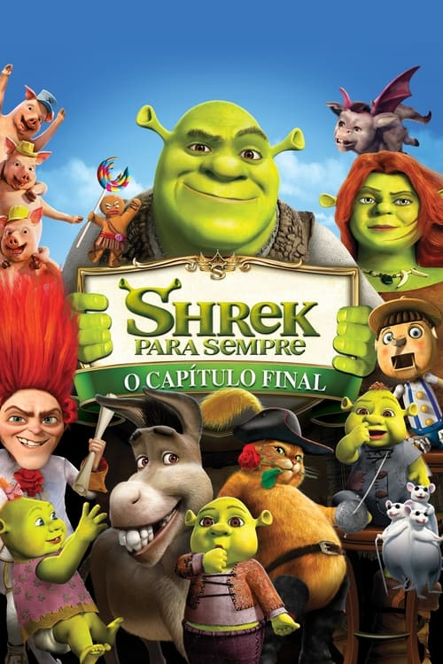

Há muito tempo ajustado à vida de casado e totalmente domesticado, Shrek fica entediado e começa a ter saudades dos dias em que se sentia um ogro de verdade. Para recuperá-los, ele firma um pacto com Rumpelstiltskin e é levado a um mundo onde ogros são caçados e ele e Fiona nunca se conheceram, além de que seus amigos Burro e Gato de Botas também não o reconhecem. Shrek precisa encontrar um jeito de se livrar do contrato para recuperar sua vida normal e seu grande amor.